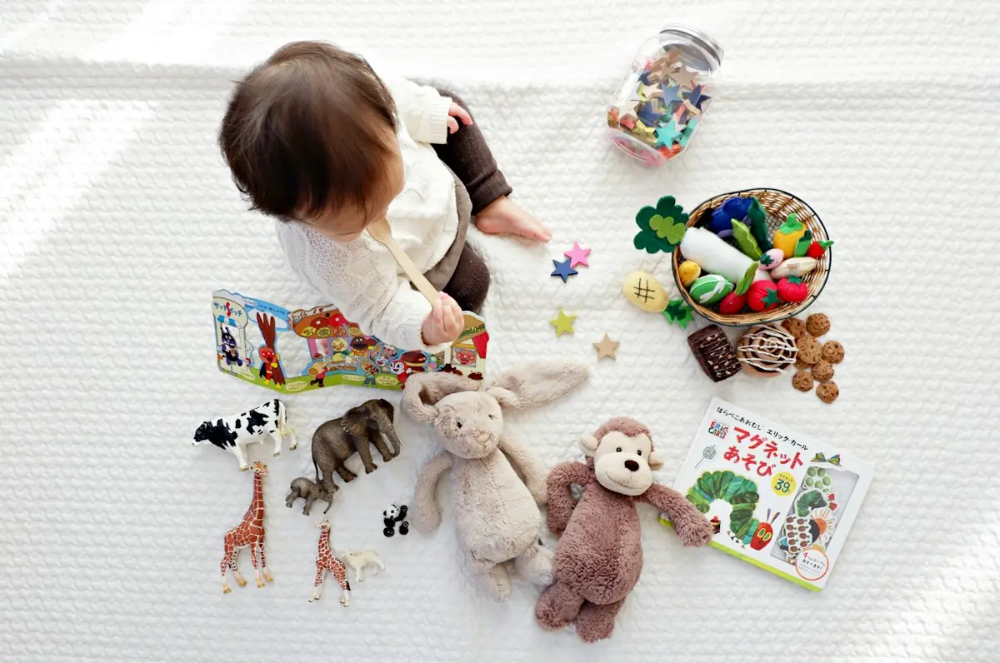
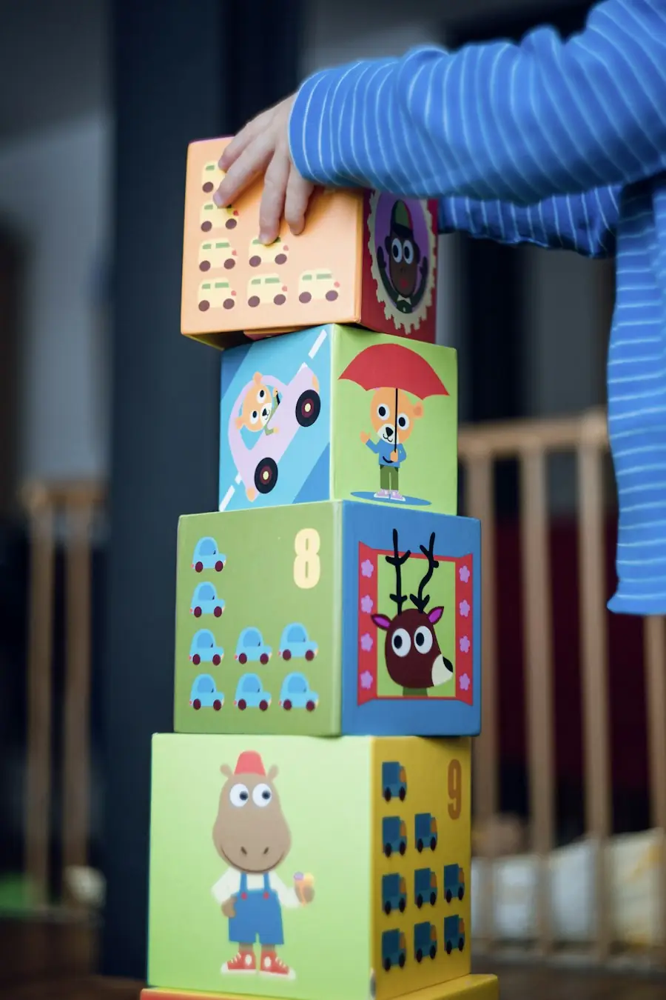
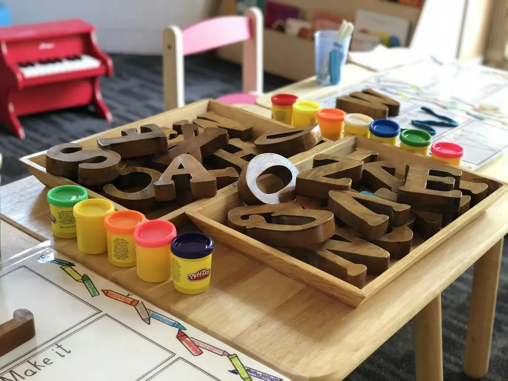

- Trang chủ
- Chương trình
Chương trình theo độ tuổi.
Dành cho bé từ 18 tháng đến 6 tuổi, chia thành ba nhóm theo giai đoạn phát triển.

Chọn nhóm lớp.
Mỗi nhóm có mục tiêu, hoạt động và nhịp sinh hoạt phù hợp với giai đoạn phát triển của bé.
Nhóm Hạt Mầm · 18–36 tháng
Ở tuổi này, bé học bằng cả cơ thể. Lớp Hạt Mầm là một không gian an toàn, ấm áp để bé tự do vận động, khám phá đồ vật thật và bắt đầu tự làm những việc nhỏ.

Bé học gì?
Vận động
Bò, đi, leo trèo, cầm nắm; rèn sự khéo léo của đôi tay qua giáo cụ vừa tầm.
Ngôn ngữ đầu đời
Gọi tên đồ vật, nghe hát, nghe kể chuyện; khuyến khích bé diễn đạt nhu cầu.
Tự lập
Tập tự rửa tay, cất đồ, xúc ăn; người lớn hướng dẫn chậm rãi, kiên nhẫn.
Cảm xúc & gắn bó
Làm quen dần với lớp; giáo viên giữ nhịp sinh hoạt ổn định để bé an tâm.
Hoạt động tiêu biểu
- Rót hạt to
- Xâu vòng gỗ
- Thả hình khối
- Chơi cát, nước
- Nghe hát, đọc thơ
- Đi dạo trong vườn
| 7:30 – 8:30 | Đón bé, chơi tự do với giáo cụ |
|---|---|
| 8:30 – 9:00 | Vòng tròn buổi sáng: chào nhau, hát |
| 9:00 – 9:45 | Hoạt động vận động và giác quan |
| 9:45 – 10:00 | Ăn nhẹ, tập tự rót nước |
| 10:00 – 10:45 | Chơi ngoài trời |
| 10:45 – 11:30 | Ăn trưa |
| 11:30 – 14:00 | Ngủ trưa |
| 14:30 – 15:00 | Ăn chiều |
| 15:00 – 16:30 | Đọc truyện, chơi nhẹ nhàng, đón bé |
Thời gian mang tính minh họa, nhà trường điều chỉnh theo thực tế từng lớp.
Nhóm Chồi Non · 3 – 4 tuổi
Bé 3–4 tuổi muốn “tự con làm”. Lớp Chồi Non chuẩn bị sẵn môi trường để bé chọn việc, làm trọn vẹn và cảm nhận niềm vui khi tự mình hoàn thành.

Bé học gì?
Thực hành cuộc sống
Rót, gắp, gấp khăn, chuẩn bị bữa ăn nhẹ — rèn tập trung và phối hợp tay mắt.
Giác quan
Phân biệt màu, kích thước, âm thanh, chất liệu qua giáo cụ được thiết kế riêng.
Ngôn ngữ nói
Kể chuyện theo tranh, học từ mới theo chủ đề, làm quen với âm của chữ.
Kỹ năng xã hội
Chờ lượt, chia sẻ, nói lời cảm ơn và xin lỗi trong sinh hoạt hằng ngày.
Hoạt động tiêu biểu
- Chuẩn bị bữa ăn nhẹ
- Phân loại màu
- Tháp hồng
- Gấp khăn
- Tưới cây
- Kể chuyện theo tranh
| 7:30 – 8:15 | Đón bé, chào hỏi |
|---|---|
| 8:15 – 8:30 | Vòng tròn buổi sáng |
| 8:30 – 10:15 | Giờ làm việc Montessori: bé tự chọn hoạt động |
| 10:15 – 11:00 | Vận động ngoài trời, chăm vườn |
| 11:00 – 11:45 | Ăn trưa, tự dọn chỗ ngồi |
| 12:00 – 14:00 | Ngủ trưa |
| 14:30 – 15:00 | Ăn chiều |
| 15:00 – 16:00 | Âm nhạc, vẽ, kể chuyện |
| 16:00 – 17:00 | Chơi tự do, đón bé |
Thời gian mang tính minh họa, nhà trường điều chỉnh theo thực tế từng lớp.
Nhóm Lá Xanh · 4 – 6 tuổi
Bé lớn hơn bắt đầu tò mò về chữ, số và thế giới xung quanh. Lớp Lá Xanh dùng giáo cụ cụ thể để bé hiểu bản chất trước khi học trừu tượng.

Bé học gì?
Ngôn ngữ
Chữ cái nhám, ghép âm, đọc từ đơn giản; tập viết bằng các bài vận động tay trước.
Toán
Hạt cườm, thanh số, bảng số — hiểu số lượng, so sánh và phép tính qua thao tác thật.
Văn hóa
Địa lý, thực vật, động vật, thời gian — khơi gợi câu hỏi “vì sao”.
Chuẩn bị vào lớp Một
Thói quen ngồi học, tự quản lý đồ dùng và tự tin trình bày trước nhóm.
Hoạt động tiêu biểu
- Chữ cái nhám
- Hạt cườm toán
- Bản đồ ghép hình
- Gieo hạt, quan sát cây
- Làm sách nhỏ
- Thuyết trình ngắn
| 7:30 – 8:15 | Đón bé, chào hỏi |
|---|---|
| 8:15 – 8:30 | Vòng tròn: lịch, thời tiết, chia sẻ |
| 8:30 – 10:30 | Giờ làm việc Montessori: ngôn ngữ, toán, văn hóa |
| 10:30 – 11:15 | Vận động ngoài trời |
| 11:15 – 12:00 | Ăn trưa |
| 12:00 – 14:00 | Ngủ trưa |
| 14:30 – 15:00 | Ăn chiều |
| 15:00 – 16:00 | Dự án nhóm, nghệ thuật, tiếng Anh làm quen |
| 16:00 – 17:00 | Đọc sách, đón bé |
Thời gian mang tính minh họa, nhà trường điều chỉnh theo thực tế từng lớp.
Ba mẹ thường hỏi.
Được. Tập tự lập là một phần của chương trình. Giáo viên hướng dẫn từng bước và trao đổi với ba mẹ để thống nhất cách làm ở nhà và ở lớp.
Theo định hướng Montessori, lớp Chồi Non và Lá Xanh có thể sinh hoạt chung một số hoạt động để bé lớn hướng dẫn bé nhỏ. Mỗi nhóm vẫn có giáo cụ và mục tiêu riêng.
Nhà trường trao đổi hằng ngày khi đón, trả bé và tổ chức buổi gặp định kỳ để chia sẻ quan sát về sự phát triển của bé.
Học phí, chính sách và thời gian nhập học được tư vấn trực tiếp. Ba mẹ đăng ký tham quan để nhận thông tin cụ thể.
Bé làm quen với chữ và số qua giáo cụ cụ thể khi đã sẵn sàng, không ép học thuộc. Mục tiêu là hiểu và yêu thích, không chạy theo chương trình lớp Một.
Ba mẹ đi xem lớp học, khu vườn, khu ăn và ngủ, trò chuyện với giáo viên. Buổi tham quan kéo dài khoảng 45 phút; lịch cụ thể được nhà trường xác nhận qua điện thoại.
Đăng ký tham quan.
Để lại thông tin, nhà trường sẽ gọi điện để sắp xếp lịch tham quan phù hợp với ba mẹ.
- Gửi yêu cầuĐiền form, rồi gửi nội dung qua email, Zalo hoặc gọi điện.
- Nhà trường liên hệXác nhận ngày giờ tham quan qua điện thoại.
- Đến thăm lớpKhoảng 45 phút: xem lớp học, khu vườn, trò chuyện với giáo viên.
Form không yêu cầu họ tên hay ngày sinh của bé — chỉ cần nhóm tuổi để nhà trường chuẩn bị.